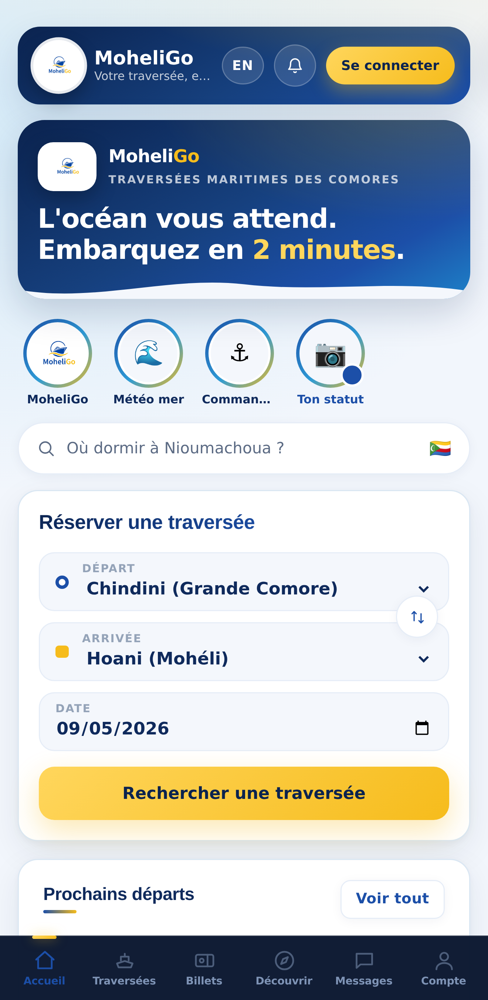

MoheliGoTRAVERSÉES MARITIMES
MOHÉLI · COMORES
L'ÈRE DE LADIGITALISATIONCOMMENCE ICI.
Descendre au port, demander, attendre. Ce temps-là est
derrière nous. La traversée se réserve depuis le téléphone qu'on a déjà
dans la poche.
Tu paies par MVola, avec kartaPay.
Ton billet arrive avec son code QR, et il reste dans ton téléphone.
Chaque soir, on publie la mer du lendemain.

UNE VRAIE PERSONNE RÉPOND
WhatsApp +269 479 43 28
moheligo.com